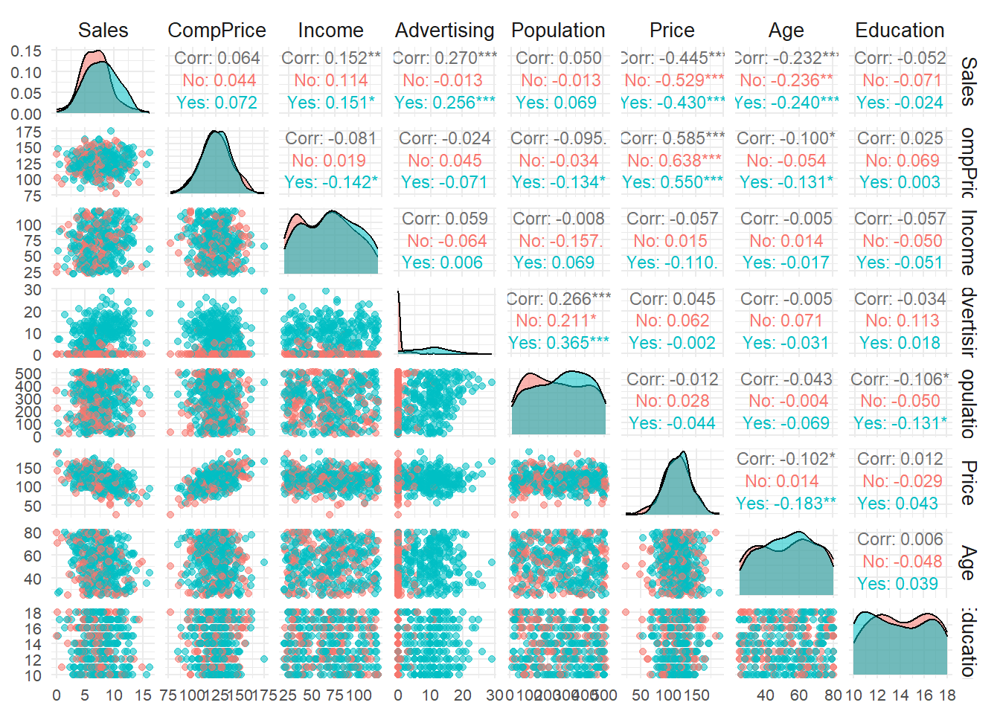
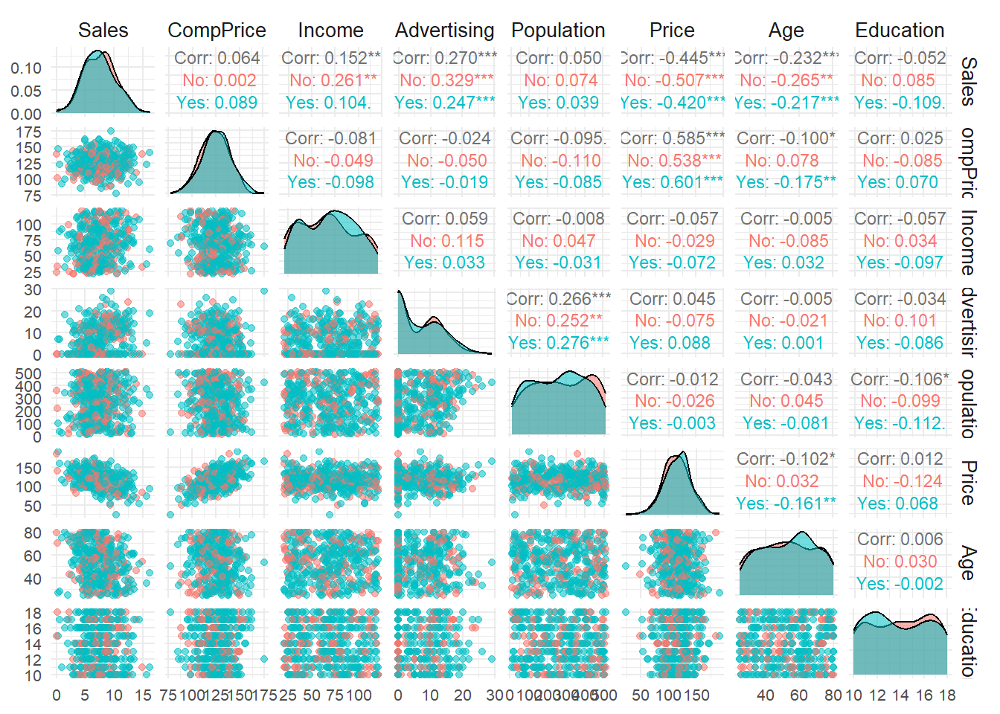
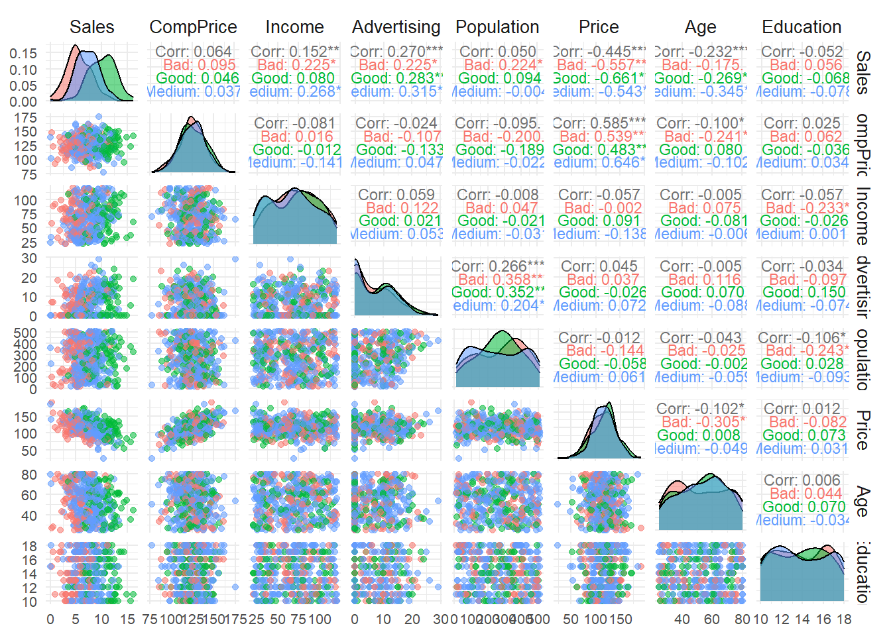
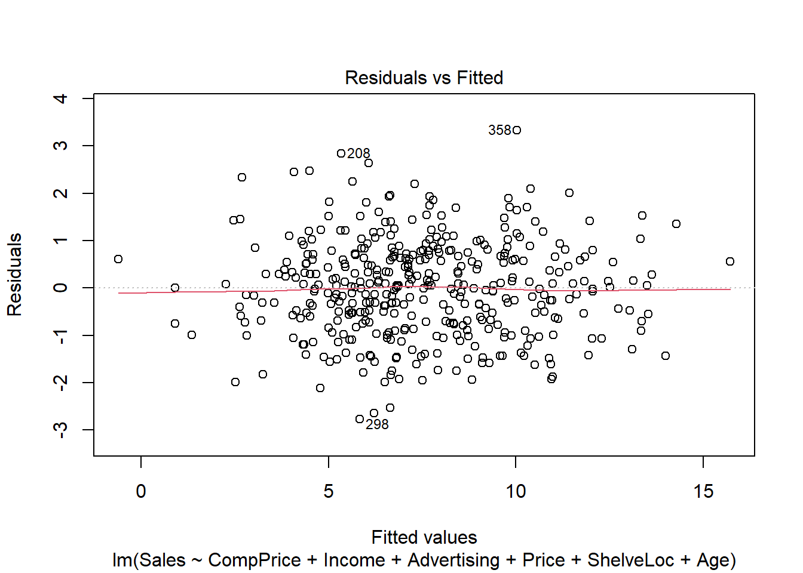
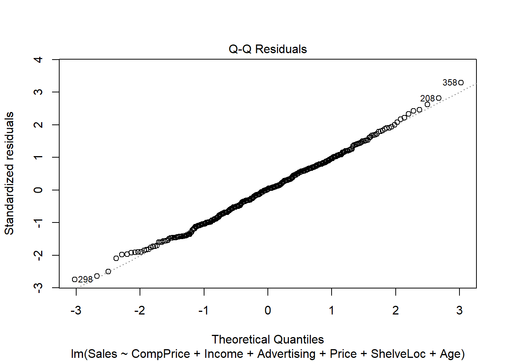
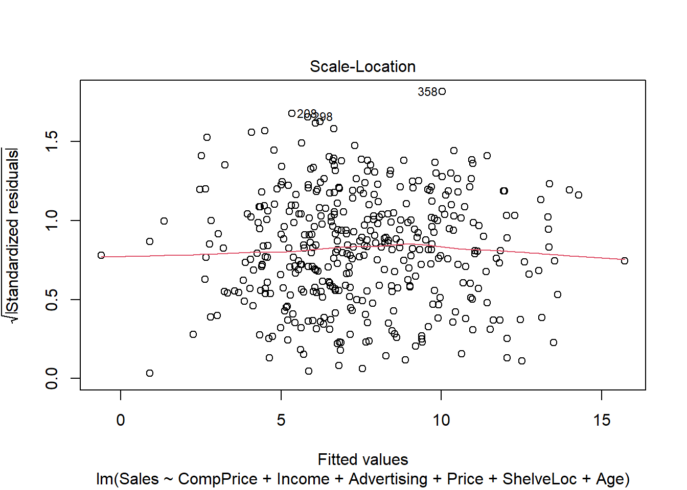
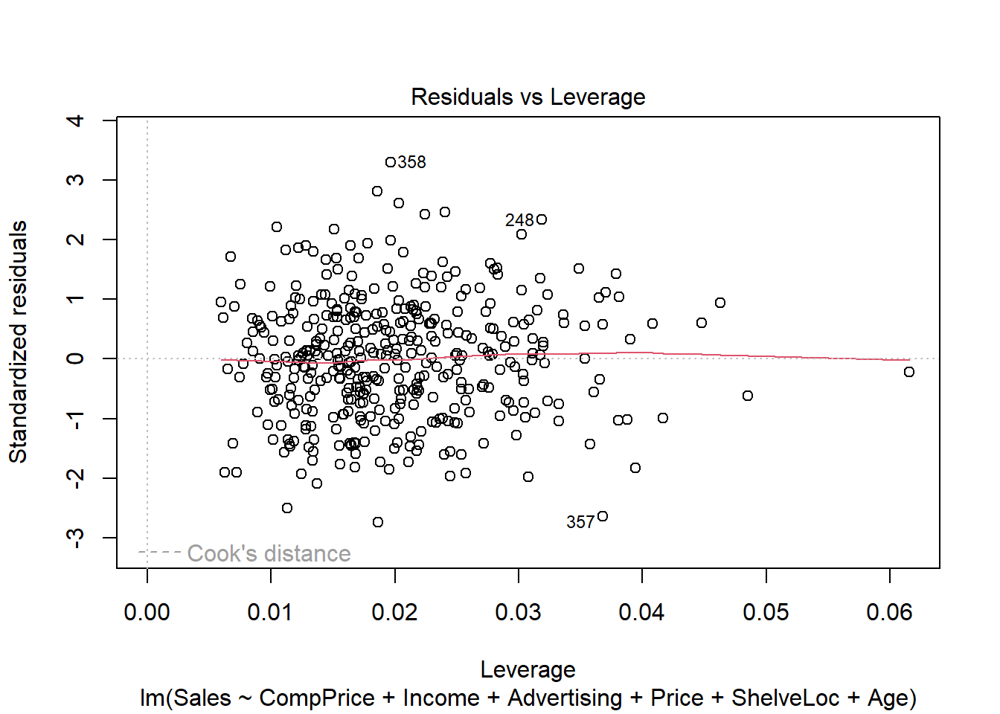

# Setup para o relatório Quarto
knitr::opts_chunk$set(echo = TRUE, message = FALSE, warning = FALSE)
# Definindo o espelho do CRAN
options(repos = c(CRAN = "https://cloud.r-project.org/"))Regressão Linear Múltipla
1 Introdução
Este relatório tem por objetivo ajustar um modelo de regressão linear múltiplo com o intuito de investigar a influência de determinadas características associadas a vendas de cadeirinhas de carro para crianças e diversos fatores que podem influenciar essas vendas.
Neste contexto a regressão será realizada sobre base de dados Carseats, que trata das vendas de cadeirinhas de carro para crianças (Child Car Seats) em diferentes locais. Essa base está na biblioteca ISLR (An Introduction to Statistical Learning with Applications in R) que é um pacote em R que acompanha o famoso livro “An Introduction to Statistical Learning” (ISLR). Ela contém vários conjuntos de dados usados para demonstrar técnicas de aprendizado estatístico e machine learning. Esta base de dados contém onze variáveis, sendo três qualitativas e as demais quantitativas.
2 Os dados
É possível baixar os dados do livro An Introduction to Statistical Learning with applications in R, mas o pacote ISLR pode ser baixado diretamente do R, para acessar a base de dados, Carseats.
install.packages("ISLR", quiet=TRUE) #instalando pacotepackage 'ISLR' successfully unpacked and MD5 sums checkedlibrary(ISLR) #chamando pacote
write.table(Carseats , file="dados_carseats.csv", sep=";", dec=",") #criando arquivo .csv no local de Descrição da Base de Dados: Número de observações: 400 Variável Resposta: - Sales: Vendas de cadeirinhas de carro em diferentes locais. (Milhares de unidades)
Variáveis Explicativas: - CompPrice: Preço da cadeirinha na loja concorrente. (em dólares).
- Income: Renda média dos consumidores naquela região. (em milhares de dólares).
- Advertising: Valor gasto em publicidade para aquela região (em milhares de dólares).
- Population: População da região. (em milhares).
- Price: Preço da cadeirinha de carro na loja.(em dólares).
- ShelveLoc: Qualidade da localização da prateleira na loja. (“Good”, “Medium”, “Bad”).
- Age: Idade média da população na região. (em anos).
- Education: Nível médio de educação da população na região.(em anos).
- Urban: Um fator que indica se a região é urbana. (“Yes” ou “No”).
- US: Um fator que indica se a loja está nos EUA. (“Yes” ou “No”).
2.1 Análise exploratória dos dados
library(skimr)
dados <- Carseats
skim(dados)| Name | dados |
| Number of rows | 400 |
| Number of columns | 11 |
| _______________________ | |
| Column type frequency: | |
| factor | 3 |
| numeric | 8 |
| ________________________ | |
| Group variables | None |
Variable type: factor
| skim_variable | n_missing | complete_rate | ordered | n_unique | top_counts |
|---|---|---|---|---|---|
| ShelveLoc | 0 | 1 | FALSE | 3 | Med: 219, Bad: 96, Goo: 85 |
| Urban | 0 | 1 | FALSE | 2 | Yes: 282, No: 118 |
| US | 0 | 1 | FALSE | 2 | Yes: 258, No: 142 |
Variable type: numeric
| skim_variable | n_missing | complete_rate | mean | sd | p0 | p25 | p50 | p75 | p100 | hist |
|---|---|---|---|---|---|---|---|---|---|---|
| Sales | 0 | 1 | 7.50 | 2.82 | 0 | 5.39 | 7.49 | 9.32 | 16.27 | ▁▆▇▃▁ |
| CompPrice | 0 | 1 | 124.97 | 15.33 | 77 | 115.00 | 125.00 | 135.00 | 175.00 | ▁▅▇▃▁ |
| Income | 0 | 1 | 68.66 | 27.99 | 21 | 42.75 | 69.00 | 91.00 | 120.00 | ▇▆▇▆▅ |
| Advertising | 0 | 1 | 6.64 | 6.65 | 0 | 0.00 | 5.00 | 12.00 | 29.00 | ▇▃▃▁▁ |
| Population | 0 | 1 | 264.84 | 147.38 | 10 | 139.00 | 272.00 | 398.50 | 509.00 | ▇▇▇▇▇ |
| Price | 0 | 1 | 115.80 | 23.68 | 24 | 100.00 | 117.00 | 131.00 | 191.00 | ▁▂▇▆▁ |
| Age | 0 | 1 | 53.32 | 16.20 | 25 | 39.75 | 54.50 | 66.00 | 80.00 | ▇▆▇▇▇ |
| Education | 0 | 1 | 13.90 | 2.62 | 10 | 12.00 | 14.00 | 16.00 | 18.00 | ▇▇▃▇▇ |
2.1.1 Comentários:
De acordo com a tabela é possível observar que não há ausência de dados. O conjunto contém tanto as variáveis numéricas (como Sales, CompPrice, Income, Advertising, Population, Price, Age) quanto as categóricas (como ShelveLoc, Urban e US). As variáveis numéricas foram descritas por meio de estatísticas como média, mediana, desvio padrão e percentis, fornecendo uma visão clara sobre sua distribuição.
2.1.2 Análise de Correlação
install.packages("GGally", quite=TRUE)package 'GGally' successfully unpacked and MD5 sums checked
The downloaded binary packages are in
C:\Users\Notebook\AppData\Local\Temp\Rtmp2h3han\downloaded_packageslibrary(GGally)# Pacote para função ggpairs
library(ggplot2)
### Multicolinearidade: r > 0.9 (ou 0.8)
# Gráfico com a variável qualitativa US
graf1 <- ggpairs(dados,
columns = c("Sales", "CompPrice", "Income", "Advertising", "Population", "Price", "Age", "Education"),
ggplot2::aes(colour=US),
upper = list(continuous = wrap("cor", size = 3)),
lower = list(continuous = "points")) +
theme_minimal() +
theme(axis.text = element_text(size = 8),
legend.position = "bottom",
strip.text = element_text(size = 10))
graf1
# Gráfico com a variável qualitativa Urban
graf2 <- ggpairs(dados,
columns = c("Sales", "CompPrice", "Income", "Advertising", "Population", "Price", "Age", "Education"),
ggplot2::aes(colour=Urban),
upper = list(continuous = wrap("cor", size = 3)),
lower = list(continuous = "points")) +
theme_minimal() +
theme(axis.text = element_text(size = 8),
legend.position = "bottom",
strip.text = element_text(size = 10))
graf2
# Gráfico com a variável qualitativa ShelveLoc
graf3 <- ggpairs(dados,
columns = c("Sales", "CompPrice", "Income", "Advertising", "Population", "Price", "Age", "Education"),
ggplot2::aes(colour=ShelveLoc),
upper = list(continuous = wrap("cor", size = 3)),
lower = list(continuous = "points")) +
theme_minimal() +
theme(axis.text = element_text(size = 8),
legend.position = "bottom",
strip.text = element_text(size = 10))
graf3
# Salvando o gráfico em .jpeg
ggsave("Grafico_dispersao_carseats.jpeg")2.1.2.1 Comentários
Com relação à análise de correlação é algo desejável observar altas correlações das variáveis independentes com relação à variável dependente que no presente caso é Sales.
Por outro lado, altas correlações entre as demais variáveis a serem utilizadas como variáveis independentes nos dá indícios de que haverá problemas de multicolinearidade ao ajustar o MRLM. Como regra geral isto ocorre quando há correlações \(\geq 0.9\) ou \(\geq 0.8\) entre as variáveis preditoras.
Dito isto, é possível observar que:
A variável dependente
Sales:não apresenta correlação linear significante com a variável
CompPrice(r= 0,064, p > 0.10);apresenta correlação linear significante com a variável
Income(r= 0.152, p < 0.001);apresenta correlação linear significante com a variável
Advertising(r= 0.270, p < 0.001);não apresenta correlação linear significante com a variável
Population(r= 0.050, p > 0.10);apresenta correlação linear significante com a variável
Price(r= -0.445, p < 0.001);apresenta correlação linear significante com a variável
Age(r= -0.232, p < 0.001);não apresenta correlação linear significante com a variável
Education(r= -0.052, p > 0.10);
2.1.2.2 Multicolinearidade - Analisando o VIF - Variance Inflation Factor
Uma maneira de identificar a multicolinearidade é através do Fator de Inflação da Variância (VIF).
O VIF é calculado para cada preditor fazendo uma regressão linear desse preditor em todos os outros preditores e, então, obtendo o \(R^2\) dessa regressão. O VIF é apenas \(1/(1-R^2)\).
Como interpretar o VIF?
Um valor maior que 5 indica correlação potencialmente grave entre uma determinada variável preditora e outras variáveis preditoras no modelo. Nesse caso, as estimativas de coeficiente e os valores de p na saída da regressão provavelmente não são confiáveis.
VIF > 10 indica problema de multicolinearidade.
Veja abaixo como obter o vif usando o R, desconsiderando as variáveis ShelveLoc, US e Urban.
# Ajuste do modelo de regressão linear múltiplo
modelo1 <- lm(Sales ~ CompPrice + Income + Advertising + Population + Price + ShelveLoc + Age + Education + Urban + US, data = dados)
# Uma opção para obter o: Variance Inflation Factor (VIF)
library(car)
vif(modelo1) GVIF Df GVIF^(1/(2*Df))
CompPrice 1.554618 1 1.246843
Income 1.024731 1 1.012290
Advertising 2.103136 1 1.450219
Population 1.145534 1 1.070296
Price 1.537068 1 1.239785
ShelveLoc 1.033891 2 1.008367
Age 1.021051 1 1.010471
Education 1.026342 1 1.013086
Urban 1.022705 1 1.011289
US 1.980720 1 1.407380Como podemos ver, nenhuma das variáveis tem o VIF > 10, logo, não há multicolinearidade.
3 Modelo 1 (Com todas as variáveis)
summary(modelo1)
Call:
lm(formula = Sales ~ CompPrice + Income + Advertising + Population +
Price + ShelveLoc + Age + Education + Urban + US, data = dados)
Residuals:
Min 1Q Median 3Q Max
-2.8692 -0.6908 0.0211 0.6636 3.4115
Coefficients:
Estimate Std. Error t value Pr(>|t|)
(Intercept) 5.6606231 0.6034487 9.380 < 2e-16 ***
CompPrice 0.0928153 0.0041477 22.378 < 2e-16 ***
Income 0.0158028 0.0018451 8.565 2.58e-16 ***
Advertising 0.1230951 0.0111237 11.066 < 2e-16 ***
Population 0.0002079 0.0003705 0.561 0.575
Price -0.0953579 0.0026711 -35.700 < 2e-16 ***
ShelveLocGood 4.8501827 0.1531100 31.678 < 2e-16 ***
ShelveLocMedium 1.9567148 0.1261056 15.516 < 2e-16 ***
Age -0.0460452 0.0031817 -14.472 < 2e-16 ***
Education -0.0211018 0.0197205 -1.070 0.285
UrbanYes 0.1228864 0.1129761 1.088 0.277
USYes -0.1840928 0.1498423 -1.229 0.220
---
Signif. codes: 0 '***' 0.001 '**' 0.01 '*' 0.05 '.' 0.1 ' ' 1
Residual standard error: 1.019 on 388 degrees of freedom
Multiple R-squared: 0.8734, Adjusted R-squared: 0.8698
F-statistic: 243.4 on 11 and 388 DF, p-value: < 2.2e-16Ao observar o primeiro modelo com o intuito de prever a variável Sales, tem-se que aproximadamente 87,34% (Multiple R-squared: 0,8734) da variação nas vendas é explicada pelas variáveis independentes, o que é um bom ajuste. Um valor de 86,98% (Adjusted R-squared: 0,8698) confirma que, mesmo ajustando para o número de variáveis no modelo, o ajuste ainda é forte. Isso é importante porque evita o viés de um R² inflado quando são adicionados mais preditores.
O valor de F elevado e o p-valor muito baixo (< 2.2e-16) indicam que o modelo, como um todo, é estatisticamente significativo, ou seja, pelo menos uma das variáveis independentes está associada às vendas.
O modelo de regressão parece fornecer uma boa explicação para as vendas com base nas variáveis incluídas, especialmente o preço (Price), o preço dos concorrentes (CompPrice), a renda (Income), a publicidade (Advertising) e a idade (Age). Contudo, Population, Education, Urban e US não se mostraram significativas.
3.1 Modelo sem Population (modelo2)
modelo2 <- update(modelo1, ~ . - Population)
summary(modelo2)
Call:
lm(formula = Sales ~ CompPrice + Income + Advertising + Price +
ShelveLoc + Age + Education + Urban + US, data = dados)
Residuals:
Min 1Q Median 3Q Max
-2.8799 -0.7015 0.0088 0.6611 3.4268
Coefficients:
Estimate Std. Error t value Pr(>|t|)
(Intercept) 5.761899 0.575319 10.015 < 2e-16 ***
CompPrice 0.092609 0.004128 22.436 < 2e-16 ***
Income 0.015774 0.001843 8.560 2.65e-16 ***
Advertising 0.125044 0.010558 11.844 < 2e-16 ***
Price -0.095302 0.002667 -35.736 < 2e-16 ***
ShelveLocGood 4.846736 0.152852 31.709 < 2e-16 ***
ShelveLocMedium 1.952145 0.125732 15.526 < 2e-16 ***
Age -0.046119 0.003176 -14.520 < 2e-16 ***
Education -0.022411 0.019565 -1.145 0.253
UrbanYes 0.118853 0.112648 1.055 0.292
USYes -0.199075 0.147315 -1.351 0.177
---
Signif. codes: 0 '***' 0.001 '**' 0.01 '*' 0.05 '.' 0.1 ' ' 1
Residual standard error: 1.018 on 389 degrees of freedom
Multiple R-squared: 0.8733, Adjusted R-squared: 0.8701
F-statistic: 268.2 on 10 and 389 DF, p-value: < 2.2e-16Observa-se que para este modelo ajustado ocorreu um aumento no valor da adequação de ajuste do modelo para 87,01% (Adjusted R-squared: 0.8701). Esse aumento indica que o modelo, sem a variável
Population, consegue explicar uma maior proporção da variação total das vendas, tornando-o mais eficiente.
3.2 Modelo sem Education (modelo3)
modelo3 <- update(modelo1, ~ . - Education)
summary(modelo3)
Call:
lm(formula = Sales ~ CompPrice + Income + Advertising + Population +
Price + ShelveLoc + Age + Urban + US, data = dados)
Residuals:
Min 1Q Median 3Q Max
-2.7878 -0.7092 0.0175 0.6789 3.3754
Coefficients:
Estimate Std. Error t value Pr(>|t|)
(Intercept) 5.3468659 0.5275196 10.136 <2e-16 ***
CompPrice 0.0927626 0.0041481 22.362 <2e-16 ***
Income 0.0159032 0.0018431 8.629 <2e-16 ***
Advertising 0.1223177 0.0111020 11.018 <2e-16 ***
Population 0.0002548 0.0003679 0.692 0.489
Price -0.0953725 0.0026715 -35.699 <2e-16 ***
ShelveLocGood 4.8557953 0.1530486 31.727 <2e-16 ***
ShelveLocMedium 1.9597110 0.1260980 15.541 <2e-16 ***
Age -0.0460665 0.0031822 -14.476 <2e-16 ***
UrbanYes 0.1276924 0.1129078 1.131 0.259
USYes -0.1693875 0.1492386 -1.135 0.257
---
Signif. codes: 0 '***' 0.001 '**' 0.01 '*' 0.05 '.' 0.1 ' ' 1
Residual standard error: 1.019 on 389 degrees of freedom
Multiple R-squared: 0.873, Adjusted R-squared: 0.8698
F-statistic: 267.5 on 10 and 389 DF, p-value: < 2.2e-16Observa-se que para este modelo ajustado o valor da adequação de ajuste do modelo continuou igual ao modelo 1 com 86,98% (Adjusted R-squared: 0.8698). Isso indica que a variável
Educationnão estava contribuindo significativamente para a explicação das vendas e, portanto, sua remoção não afetou o desempenho do modelo.
3.3 Modelo sem Urban (modelo4)
modelo4 <- update(modelo1, ~ . - Urban)
summary(modelo4)
Call:
lm(formula = Sales ~ CompPrice + Income + Advertising + Population +
Price + ShelveLoc + Age + Education + US, data = dados)
Residuals:
Min 1Q Median 3Q Max
-2.8498 -0.6992 0.0300 0.6436 3.4616
Coefficients:
Estimate Std. Error t value Pr(>|t|)
(Intercept) 5.7267269 0.6005220 9.536 <2e-16 ***
CompPrice 0.0930440 0.0041433 22.457 <2e-16 ***
Income 0.0158656 0.0018447 8.601 <2e-16 ***
Advertising 0.1235923 0.0111169 11.118 <2e-16 ***
Population 0.0001822 0.0003698 0.493 0.622
Price -0.0953182 0.0026715 -35.680 <2e-16 ***
ShelveLocGood 4.8365318 0.1526307 31.688 <2e-16 ***
ShelveLocMedium 1.9458754 0.1257409 15.475 <2e-16 ***
Age -0.0459156 0.0031802 -14.438 <2e-16 ***
Education -0.0219546 0.0197095 -1.114 0.266
USYes -0.1836133 0.1498769 -1.225 0.221
---
Signif. codes: 0 '***' 0.001 '**' 0.01 '*' 0.05 '.' 0.1 ' ' 1
Residual standard error: 1.019 on 389 degrees of freedom
Multiple R-squared: 0.873, Adjusted R-squared: 0.8698
F-statistic: 267.5 on 10 and 389 DF, p-value: < 2.2e-16Observa-se que para este modelo ajustado o valor da adequação de ajuste do modelo continuou igual ao modelo 1 com 86,98% (Adjusted R-squared: 0.8698). Isso indica que a variável
Urbannão estava contribuindo significativamente para a explicação das vendas e, portanto, sua remoção não afetou o desempenho do modelo.
3.4 Modelo sem US (modelo5)
modelo5 <- update(modelo1, ~ . - US)
summary(modelo5)
Call:
lm(formula = Sales ~ CompPrice + Income + Advertising + Population +
Price + ShelveLoc + Age + Education + Urban, data = dados)
Residuals:
Min 1Q Median 3Q Max
-2.8596 -0.7088 0.0363 0.6693 3.2979
Coefficients:
Estimate Std. Error t value Pr(>|t|)
(Intercept) 5.5811103 0.6003608 9.296 < 2e-16 ***
CompPrice 0.0927157 0.0041496 22.343 < 2e-16 ***
Income 0.0156692 0.0018431 8.501 4.06e-16 ***
Advertising 0.1136245 0.0080249 14.159 < 2e-16 ***
Population 0.0002890 0.0003648 0.792 0.429
Price -0.0954252 0.0026723 -35.710 < 2e-16 ***
ShelveLocGood 4.8486758 0.1532053 31.648 < 2e-16 ***
ShelveLocMedium 1.9661745 0.1259527 15.610 < 2e-16 ***
Age -0.0461184 0.0031832 -14.488 < 2e-16 ***
Education -0.0188798 0.0196502 -0.961 0.337
UrbanYes 0.1224780 0.1130495 1.083 0.279
---
Signif. codes: 0 '***' 0.001 '**' 0.01 '*' 0.05 '.' 0.1 ' ' 1
Residual standard error: 1.02 on 389 degrees of freedom
Multiple R-squared: 0.8729, Adjusted R-squared: 0.8697
F-statistic: 267.2 on 10 and 389 DF, p-value: < 2.2e-16Observa-se que para este modelo ajustado o valor da adequação de ajuste do modelo diminuiu em comparação com o modelo 1, ficando com 86,97% (Adjusted R-squared: 0.8697). Isso indica que a variável
UStem uma influência pequena, mas presente, na explicação das vendas.
3.5 Modelo sem Population, Education, Urban e US (modelo6)
modelo6 <- update(modelo1, ~ . -Population - Education - Urban - US)
summary(modelo6)
Call:
lm(formula = Sales ~ CompPrice + Income + Advertising + Price +
ShelveLoc + Age, data = dados)
Residuals:
Min 1Q Median 3Q Max
-2.7728 -0.6954 0.0282 0.6732 3.3292
Coefficients:
Estimate Std. Error t value Pr(>|t|)
(Intercept) 5.475226 0.505005 10.84 <2e-16 ***
CompPrice 0.092571 0.004123 22.45 <2e-16 ***
Income 0.015785 0.001838 8.59 <2e-16 ***
Advertising 0.115903 0.007724 15.01 <2e-16 ***
Price -0.095319 0.002670 -35.70 <2e-16 ***
ShelveLocGood 4.835675 0.152499 31.71 <2e-16 ***
ShelveLocMedium 1.951993 0.125375 15.57 <2e-16 ***
Age -0.046128 0.003177 -14.52 <2e-16 ***
---
Signif. codes: 0 '***' 0.001 '**' 0.01 '*' 0.05 '.' 0.1 ' ' 1
Residual standard error: 1.019 on 392 degrees of freedom
Multiple R-squared: 0.872, Adjusted R-squared: 0.8697
F-statistic: 381.4 on 7 and 392 DF, p-value: < 2.2e-16Observa-se que para este modelo ajustado o valor da adequação de ajuste do modelo diminuiu em comparação com o modelo 1, ficando com 86,97% (Adjusted R-squared: 0.8697).A exclusão das variáveis
Population,Education,UrbaneUSresultou em um modelo mais simples, com uma redução mínima na capacidade de explicar as vendas.
4 Métodos de seleção de modelos
4.1 Medida AIC
AIC(modelo1)[1] 1163.974AIC(modelo2)[1] 1162.299AIC(modelo3)[1] 1163.153AIC(modelo4)[1] 1163.192AIC(modelo5)[1] 1163.527AIC(modelo6)[1] 1160.47Comparando-se os seis modelos verificou-se que o modelo com menor valor AIC é o modelo 6 e, portanto, o preferível.
4.2 Comparação de modelos encaixados (ANOVA)
anova(modelo6, modelo1)Analysis of Variance Table
Model 1: Sales ~ CompPrice + Income + Advertising + Price + ShelveLoc +
Age
Model 2: Sales ~ CompPrice + Income + Advertising + Population + Price +
ShelveLoc + Age + Education + Urban + US
Res.Df RSS Df Sum of Sq F Pr(>F)
1 392 407.39
2 388 402.83 4 4.5533 1.0964 0.358O teste ANOVA indica que a diferença entre os dois modelos não é estatisticamente significativa (p = 0.358), sugerindo que o modelo mais simples (modelo6), sem essas variáveis adicionais, é preferível por ser mais mais simples e possuir a mesma capacidade de ajuste. Assim, o modelo 6 é o mais adequado, pois não há ganho significativo ao adicionar as variáveis extras, e isso ajuda a evitar a complexidade desnecessária.
5 Modelo selecionado (modelo6)
plot(modelo6)



5.1 Análises dos pressupostos e Comentários
Pode-se observar no primeiro gráfico Residuals vs Fitted que o modelo apresenta uma boa linearidade, já que a linha vermelha indica uma relação linear quando está próxima da linha cinza.
No gráfico Q-Q Residuals pode-se notar que os erros têm uma distribuição aproximadamente normal, já que os pontos estão próximos à linha pontilhada.
No gráfico do Scale-Location é possível observar que a variância dos resíduos é constante ao longo dos valores ajustados, o que indica que a suposição de homocedasticidade foi atendida.
No gráfico do Residuals vs Leverage os outliers identificados foram os pontos 248 e 358, com resíduos padronizados significativos, indicando que eles podem estar influenciando o ajuste do modelo. O ponto 357 também merece atenção, mas não é tão extremo quanto os outros.
6 Interpretações do modelo selecionado
library(report)
report(modelo6)We fitted a linear model (estimated using OLS) to predict Sales with CompPrice,
Income, Advertising, Price, ShelveLoc and Age (formula: Sales ~ CompPrice +
Income + Advertising + Price + ShelveLoc + Age). The model explains a
statistically significant and substantial proportion of variance (R2 = 0.87,
F(7, 392) = 381.44, p < .001, adj. R2 = 0.87). The model's intercept,
corresponding to CompPrice = 0, Income = 0, Advertising = 0, Price = 0,
ShelveLoc = Bad and Age = 0, is at 5.48 (95% CI [4.48, 6.47], t(392) = 10.84, p
< .001). Within this model:
- The effect of CompPrice is statistically significant and positive (beta =
0.09, 95% CI [0.08, 0.10], t(392) = 22.45, p < .001; Std. beta = 0.50, 95% CI
[0.46, 0.55])
- The effect of Income is statistically significant and positive (beta = 0.02,
95% CI [0.01, 0.02], t(392) = 8.59, p < .001; Std. beta = 0.16, 95% CI [0.12,
0.19])
- The effect of Advertising is statistically significant and positive (beta =
0.12, 95% CI [0.10, 0.13], t(392) = 15.01, p < .001; Std. beta = 0.27, 95% CI
[0.24, 0.31])
- The effect of Price is statistically significant and negative (beta = -0.10,
95% CI [-0.10, -0.09], t(392) = -35.70, p < .001; Std. beta = -0.80, 95% CI
[-0.84, -0.76])
- The effect of ShelveLoc [Good] is statistically significant and positive
(beta = 4.84, 95% CI [4.54, 5.14], t(392) = 31.71, p < .001; Std. beta = 1.71,
95% CI [1.61, 1.82])
- The effect of ShelveLoc [Medium] is statistically significant and positive
(beta = 1.95, 95% CI [1.71, 2.20], t(392) = 15.57, p < .001; Std. beta = 0.69,
95% CI [0.60, 0.78])
- The effect of Age is statistically significant and negative (beta = -0.05,
95% CI [-0.05, -0.04], t(392) = -14.52, p < .001; Std. beta = -0.26, 95% CI
[-0.30, -0.23])
Standardized parameters were obtained by fitting the model on a standardized
version of the dataset. 95% Confidence Intervals (CIs) and p-values were
computed using a Wald t-distribution approximation.Fizemos o ajuste de um modelo linear (estimado usando OLS) para prever Sales com CompPrice, Income, Advertising, Price, ShelveLoc e Age (fórmula: Sales ~ CompPrice + Income + Advertising + Price + ShelveLoc + Age). O modelo explica uma proporção estatisticamente significativa e substancial de variância (R² = 0,87, F(7, 392) = 381,44, p < 0,001, R² ajustado = 0,87). O intercepto do modelo, correspondente a CompPrice = 0, Income = 0, Advertising = 0, Price = 0, ShelveLoc = Bad e Age = 0, é de 5,48 (IC 95% [4,48, 6,47], t(392) = 10,84, p < 0,001). Dentro deste modelo:
6.0.1 Relato em português:
O efeito de
CompPriceé estatisticamente significativo e positivo (beta = 0,09, IC 95% [0,08, 0,10], t(392) = 22,45, p < 0,001; Std. beta = 0,50, IC 95% [0,46, 0,55])O efeito de
Rendaé estatisticamente significativo e positivo (beta = 0,02, IC 95% [0,01, 0,02], t(392) = 8,59, p < 0,001; Std. beta = 0,16, IC 95% [0,12, 0,19])O efeito de
Publicidadeé estatisticamente significativo e positivo (beta = 0,12, IC 95% [0,10, 0,13], t(392) = 15,01, p < 0,001; Std. beta = 0,27, IC 95% [0,24, 0,31])O efeito de
Preçoé estatisticamente significativo e negativo (beta = -0,10, IC 95% [-0,10, -0,09], t(392) = -35,70, p < 0,001; Std. beta = -0,80, IC 95% [-0,84, -0,76])O efeito de
Localização da Prateleira [Boa]é estatisticamente significativo e positivo (beta = 4,84, IC 95% [4,54, 5,14], t(392) = 31,71, p < 0,001; Std. beta = 1,71, IC 95% [1,61, 1,82])O efeito de
Localização da Prateleira [Média]é estatisticamente significativo e positivo (beta = 1,95, IC 95% [1,71, 2,20], t(392) = 15,57, p < 0,001; Std. beta = 0,69, IC 95% [0,60, 0,78])O efeito de Idade é estatisticamente significativo e negativo (beta = -0,05, IC 95% [-0,05, -0,04], t(392) = -14,52, p < 0,001; Std. beta = -0,26, IC 95% [-0,30, -0,23])
Os parâmetros padronizados foram obtidos ajustando o modelo em uma versão padronizada do conjunto de dados. Os Intervalos de Confiança (ICs) de 95% e os valores de p foram calculados usando uma aproximação da distribuição t de Wald.
6.1 Coeficientes padronizados
lm.beta::lm.beta(modelo6)
Call:
lm(formula = Sales ~ CompPrice + Income + Advertising + Price +
ShelveLoc + Age, data = dados)
Standardized Coefficients::
(Intercept) CompPrice Income Advertising Price
NA 0.5026489 0.1564238 0.2729350 -0.7991299
ShelveLocGood ShelveLocMedium Age
0.7013309 0.3444615 -0.2646066 7 Previsões
summary(dados) Sales CompPrice Income Advertising
Min. : 0.000 Min. : 77 Min. : 21.00 Min. : 0.000
1st Qu.: 5.390 1st Qu.:115 1st Qu.: 42.75 1st Qu.: 0.000
Median : 7.490 Median :125 Median : 69.00 Median : 5.000
Mean : 7.496 Mean :125 Mean : 68.66 Mean : 6.635
3rd Qu.: 9.320 3rd Qu.:135 3rd Qu.: 91.00 3rd Qu.:12.000
Max. :16.270 Max. :175 Max. :120.00 Max. :29.000
Population Price ShelveLoc Age Education
Min. : 10.0 Min. : 24.0 Bad : 96 Min. :25.00 Min. :10.0
1st Qu.:139.0 1st Qu.:100.0 Good : 85 1st Qu.:39.75 1st Qu.:12.0
Median :272.0 Median :117.0 Medium:219 Median :54.50 Median :14.0
Mean :264.8 Mean :115.8 Mean :53.32 Mean :13.9
3rd Qu.:398.5 3rd Qu.:131.0 3rd Qu.:66.00 3rd Qu.:16.0
Max. :509.0 Max. :191.0 Max. :80.00 Max. :18.0
Urban US
No :118 No :142
Yes:282 Yes:258
Agora, suponha que temos por objetivo prever os valores de vendas (Sales) considerando os seguintes valores para as variáveis explicativas:
# Novos valores das variáveis preditoras
novas.preditoras <- data.frame(CompPrice = c(120, 150),
Income = c(50, 70),
Advertising = c(10, 20),
Price = c(99, 95),
ShelveLoc = factor(c("Good", "Medium")),
Age = c(20, 30))Observação:
O data.frame novas.preditoras com os novos valores das variáveis preditoras deve ser construído com os mesmos nomes das variáveis preditoras utilizadas no objeto que contém o modelo ajustado.
7.1 Intervalo de Confiança
Um intervalo de confiança captura a incerteza em torno dos valores médios (valores esperados) preditos.
predict(modelo6, novas.preditoras,
interval = "confidence") fit lwr upr
1 13.00863 12.68342 13.33384
2 14.29683 13.88790 14.70576Para a primeira observação: A estimativa pontual para Sales é de aproximadamente 13.01. O intervalo de confiança é de [12.68, 13.33]. Isso significa que, com 95% de confiança, podemos afirmar que a média real das vendas para as condições especificadas (com CompPrice = 120, Income = 50, etc.) está entre 12.68 e 13.33.
Para a segunda observação: A estimativa pontual para Sales é de aproximadamente 14.30. O intervalo de confiança é de [13.89, 14.71]. Aqui também, temos 95% de confiança de que a média real das vendas para as condições especificadas (com CompPrice = 150, Income = 70, etc.) está entre 13.89 e 14.71.
7.2 Intervalo de Predição/Previsão
Um intervalo de predição captura a incerteza em torno de um único valor não observado na base de dados e não em torno do seu valor médio/esperado o qual é obtido pelas variáveis preditoras observadas na base de dados.
predict(modelo6, novas.preditoras,
interval = "prediction") fit lwr upr
1 13.00863 10.97817 15.03909
2 14.29683 12.25129 16.34237Para a primeira observação: A estimativa pontual para Sales é a mesma, 13.01. No entanto, o intervalo de predição é mais amplo, variando de [10.98, 15.04]. Isso indica que, para uma nova observação sob as mesmas condições, podemos esperar que as vendas estejam entre 10.98 e 15.04. Esse intervalo mais amplo reflete a incerteza relacionada a um único valor observado, que é maior do que a incerteza associada à média.
Para a segunda observação: A estimativa pontual permanece em 14.30, mas o intervalo de predição é [12.25, 16.34]. Isso sugere que, para uma nova observação, as vendas podem variar entre 12.25 e 16.34, refletindo também a variabilidade dos dados e a incerteza associada a um único valor.
8 Conclusão
A análise de regressão linear múltipla realizada sobre a base de dados Carseats forneceu insights valiosos sobre os fatores que influenciam as vendas de cadeirinhas de carro para crianças. O modelo ajustado, que incluiu variáveis como CompPrice, Income, Advertising, Price, ShelveLoc e Age, demonstrou um alto poder explicativo, com aproximadamente 87,34% da variação nas vendas sendo explicada pelas variáveis independentes.
As análises de correlação e a avaliação do Fator de Inflação da Variância (VIF) indicaram que não há problemas significativos de multicolinearidade entre as variáveis selecionadas. A remoção das variáveis Population, Education, Urban e US do modelo não resultou em uma perda significativa de poder preditivo, conforme indicado pelo ajuste de R².
Os resultados revelaram que:
PreçoePublicidadeexercem efeitos positivos e significativos nas vendas, sugerindo que estratégias de marketing e posicionamento de preço podem influenciar substancialmente a demanda.A
localização da prateleira(especialmente em locais classificados como “Boa”) é um fator crucial que pode aumentar as vendas, enquanto uma maior idade da população está associada a uma redução nas vendas.A
rendamédia dos consumidores também demonstrou ter um impacto positivo, corroborando a importância do poder aquisitivo na decisão de compra.